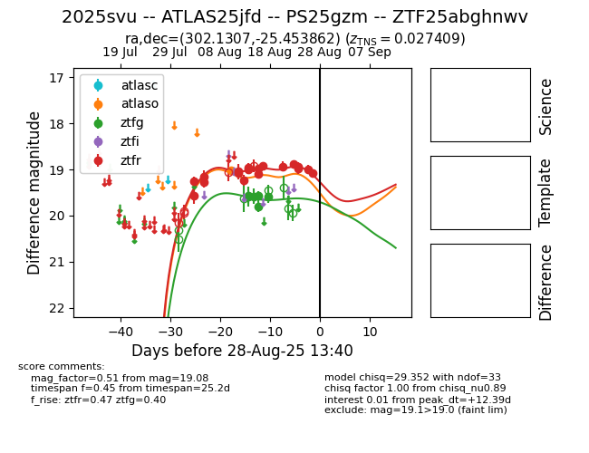

Target 2025svu at 2025-08-26 23:22, see:
FINK: fink-portal.org/ZTF25abghnwv
Lasair: lasair-ztf.lsst.ac.uk/objects/ZTF25abghnwv
ALeRCE: alerce.online/object/ZTF25abghnwv
TNS: wis-tns.org/object/2025svu
YSE: ziggy.ucolick.org/yse/transient_detail/2025svu
alt names
ZTF25abghnwv (ztf,fink)
2025svu (tns,yse)
ATLAS25jfd (atlas)
PS25gzm (panstarrs)
coordinates:
equatorial (ra, dec) = (302.1307,-25.45386)
galactic (l, b) = (16.7945,-27.46421)
photometry
last atlaso=19.02, ztfg=19.60, ztfr=19.00
1 atlaso, 6 ztfg, 17 ztfr detections
